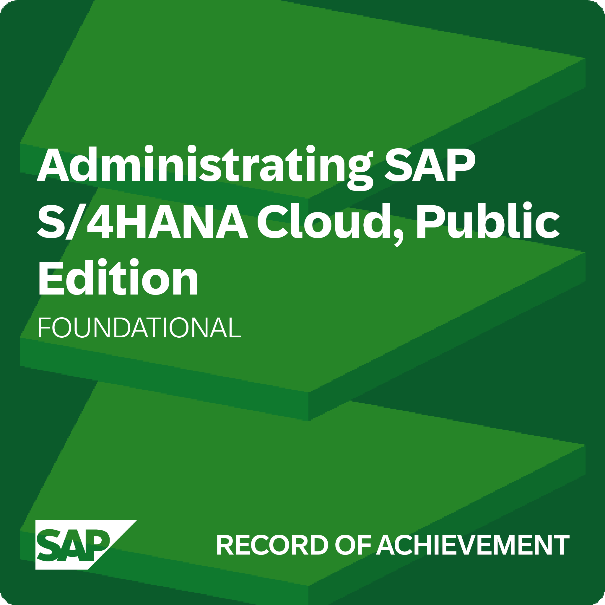
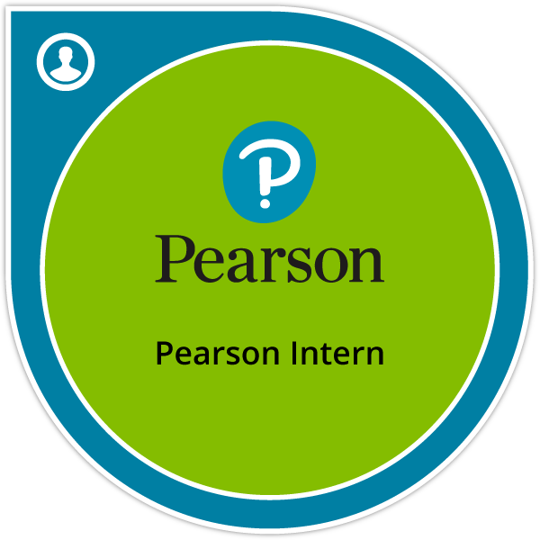

Certifications & Digital Badges
Industry-Recognized Credentials
View all my verified credentials and digital badges on Credly:
View All Badges on Credly
AWS Certified Solutions Architect – Associate
Amazon Web Services
Expires Oct 27, 2026

AWS Certified Cloud Practitioner
Amazon Web Services
Expires Oct 27, 2026

Certified in Cybersecurity (CC)
ISC2
Expires Dec 31, 2025

Administrating SAP S/4HANA Cloud, Public Edition
SAP
Issued Mar 2024

Introducing Cybersecurity
SAP
Issued Mar 2024

Exploring SAP Business Technology Platform
SAP
Issued Mar 2024

AWS Cloud Quest: Solutions Architect
AWS Training and Certification
Issued Sep 2023

AWS Cloud Quest: Cloud Practitioner
AWS Training and Certification
Issued Jun 2023
Networking Devices and Initial Configuration
Cisco
Issued Oct 2022

Networking Basics
Cisco
Issued Oct 2022

Introduction to Cybersecurity
Cisco
Issued Oct 2022

IBM Agile Explorer
IBM
Issued Sep 2021

IBM Virtual Collaborator
IBM
Issued Dec 2021

AIX Systems Administrator - Experienced
IBM
Issued Nov 2021

IBM Cloud Essentials
IBM
Issued Sep 2021

Pearson Intern
Pearson UK
Issued Aug 2023